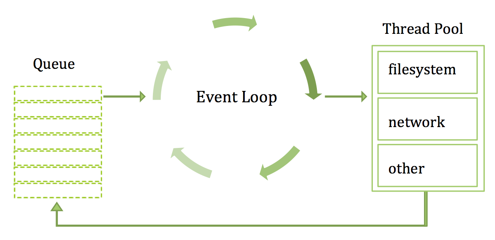

Oracle SSI - Digital Team
Welcome to
THEME OF THE MONTH
JavaScript & NodeJS
Session #2
Date: 3rd August, 2018
NodeJS platform
Node.js is a server-side platform built on Google Chrome's JavaScript Engine (V8 Engine)

Features
-
Asynchronous and Event Driven
All APIs of Node.js library are asynchronous, that is, non-blocking. -
Very Fast
Being built on Google Chrome's V8 JavaScript Engine, Node.js library is very fast in code execution. -
Single Threaded but Highly Scalable
Node.js uses a single threaded model with event looping. Event mechanism helps the server to respond in a non-blocking way and makes the server highly scalable as opposed to traditional servers which create limited threads to handle requests. -
No Buffering
Node.js applications never buffer any data. These applications simply output the data in chunks.
Javascript V8 Engine
V8 is Google’s open source high-performance JavaScript engine, written in C++ and used in Google Chrome, the open source browser from Google, and in Node.js, among others
- SpiderMonkey Mozilla
- Rhino Mozilla
- Webkit Safari
- node --print-bytecode server.js
Event Loop
Creating Node Server
A Node.js application consists of the following three important components −
- Import required modules We use the require directive to load Node.js modules.
- Create server A server which will listen to client's requests similar to Apache HTTP Server.
- Read request and return response The server created in an earlier step will read the HTTP request made by the client which can be a browser or a console and return the response.
var http = require("http");
http.createServer(function (request, response) {
// Send the HTTP header
// HTTP Status: 200 : OK
// Content Type: text/plain
response.writeHead(200, {'Content-Type': 'text/plain'});
// Send the response body as "Hello World"
response.end('Hello World\n');
}).listen(8081);
// Console will print the message
console.log('Server running at http://127.0.0.1:8081/');
Express Framework - Node Server
Express is a minimal and flexible Node.js web application framework that provides a robust set of features to develop web and mobile applications
- body-parser This is a node.js middleware for handling JSON, Raw, Text and URL encoded form data.
- cookie-parser Parse Cookie header and populate req.cookies with an object keyed by the cookie names.
- multer This is a node.js middleware for handling multipart/form-data.
var express = require('express');
var app = express();
app.get('/', function (req, res) {
res.send('Hello World');
})
var server = app.listen(8081, function () {
var host = server.address().address
var port = server.address().port
console.log("Example app listening at http://%s:%s", host, port)
})
RESTful API
REST stands for REpresentational State Transfer. REST is web standards based architecture and uses HTTP Protocol
var express = require('express');
var app = express();
var fs = require("fs");
app.get('/listUsers', function (req, res) {
fs.readFile( __dirname + "/" + "users.json", 'utf8', function (err, data) {
console.log( data );
res.end( data );
});
})
var server = app.listen(8081, function () {
var host = server.address().address
var port = server.address().port
console.log("Example app listening at http://%s:%s", host, port)
})
NPM - Node Package manager

Package.json
{
"name": "angular2-multiselect-dropdown",
"version": "2.9.0",
"description": "Angular 2 and angular 4 multiselect dropdown component.",
"keywords": [
"angular 2 multiselect dropdown",
"angular 4 multiselect dropdown",
"angular multiselect",
"angular dropdown"
],
"license": "MIT",
"angular-cli": {},
"author": "Pradeep Terli",
"scripts": {
"ng": "ng",
"start": "ng serve",
"e2e": "ng e2e",
"build": "npm run build:esm && npm run build:umd && gulp copy",
"build:esm": "gulp inline-templates && npm run ngcompile",
"build:esm:watch": "gulp build:esm:watch",
"build:umd": "webpack --config webpack-umd.config.ts",
"build:umd:watch": "npm run build:umd -- --watch",
"build:watch": "concurrently --raw \"npm run build:umd:watch\" \"npm run build:esm:watch\"",
"ci": "npm run lint && npm run test && npm run build && npm run docs",
"clean:all": "npm run clean:tmp && rimraf node_modules",
"clean:tmp": "rimraf coverage dist tmp docs",
"codecov": "cat coverage/lcov.info | codecov",
"docs": "compodoc -p tsconfig.json -d docs --disableCoverage --disablePrivateOrInternalSupport",
"explorer": "source-map-explorer ./dist/index.umd.js",
"gh-pages": "rimraf docs && npm run docs && gh-pages -d docs",
"lint": "npm run tslint 'src/**/*.ts'",
"ngcompile": "node_modules/.bin/ngc -p tsconfig-aot.json",
"postversion": "git push && git push --tags",
"prebuild": "rimraf dist tmp",
"prebuild:watch": "rimraf dist tmp",
"prepublishOnly": "npm run ci",
"preversion": "npm run ci",
"test": "karma start",
"test:watch": "karma start --auto-watch --no-single-run",
"tslint": "tslint",
"github-pages": "ng build --base-href /angular2-multiselect-dropdown/"
},
"private": false,
"dependencies": {
},
"devDependencies": {
"@angular/common": "^4.0.0",
"@angular/compiler": "^4.0.0",
"@angular/compiler-cli": "^4.0.0",
"@angular/animations": "^4.0.0",
"@angular/cli": "^1.3.2",
"@angular/core": "^4.0.0",
"@angular/forms": "^4.0.0",
"@angular/http": "^4.0.0",
"@angular/platform-browser": "^4.0.0",
"@angular/platform-browser-dynamic": "^4.0.0",
"@angular/router": "^4.0.0",
"@compodoc/compodoc": "^1.0.0-beta.9",
"@types/jasmine": "^2.5.47",
"@types/karma": "^0.13.35",
"@types/node": "^7.0.18",
"@types/webpack": "^2.2.15",
"@types/webpack-env": "^1.13.0",
"angular2-template-loader": "^0.6.2",
"awesome-typescript-loader": "^3.1.3",
"codecov": "^2.2.0",
"ignore-loader": "*",
"codelyzer": "^3.0.1",
"concurrently": "^3.4.0",
"css-loader": "^0.28.1",
"gh-pages": "^1.0.0",
"gulp": "^3.9.1",
"gulp-copy": "^1.0.1",
"gulp-inline-ng2-template": "^4.0.0",
"istanbul-instrumenter-loader": "^2.0.0",
"jasmine-core": "^2.6.1",
"json-loader": "^0.5.4",
"@types/log4js": "0.0.33",
"karma": "^1.7.0",
"karma-chrome-launcher": "^2.1.1",
"karma-coverage-istanbul-reporter": "^1.2.1",
"karma-jasmine": "^1.1.0",
"karma-mocha-reporter": "^2.2.3",
"karma-sourcemap-loader": "^0.3.7",
"karma-webpack": "^2.0.3",
"node-sass": "^4.5.2",
"raw-loader": "^0.5.1",
"rimraf": "2.6.1",
"rxjs": "^5.3.1",
"sass-loader": "^6.0.5",
"source-map-explorer": "^1.3.3",
"to-string-loader": "^1.1.5",
"ts-node": "^3.0.4",
"tslint": "^5.2.0",
"typescript": "^2.3.2",
"webpack": "^2.5.1",
"webpack-angular-externals": "^1.0.2",
"webpack-rxjs-externals": "^1.0.0",
"zone.js": "^0.8.10",
"ng2-gist": "*",
"primeng": "*",
"bootstrap": "^4.0.0-beta.2"
},
"repository": {
"type": "git",
"url": "https://github.com/CuppaLabs/angular2-multiselect-dropdown"
},
"bugs": {
"url": "https://github.com/CuppaLabs/angular2-multiselect-dropdown/issues"
}
}